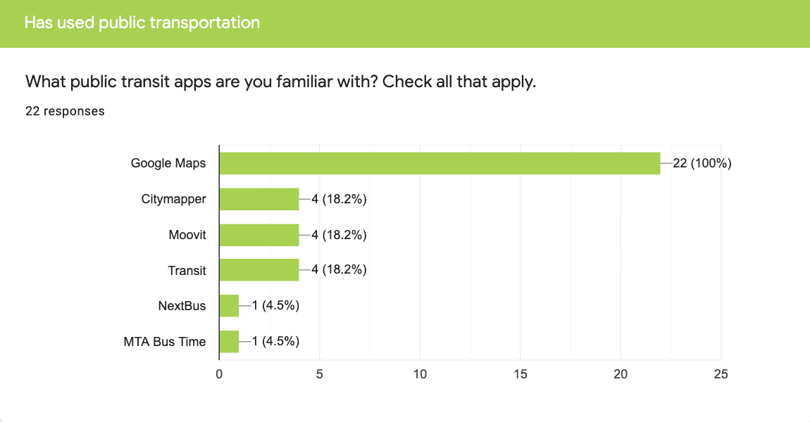
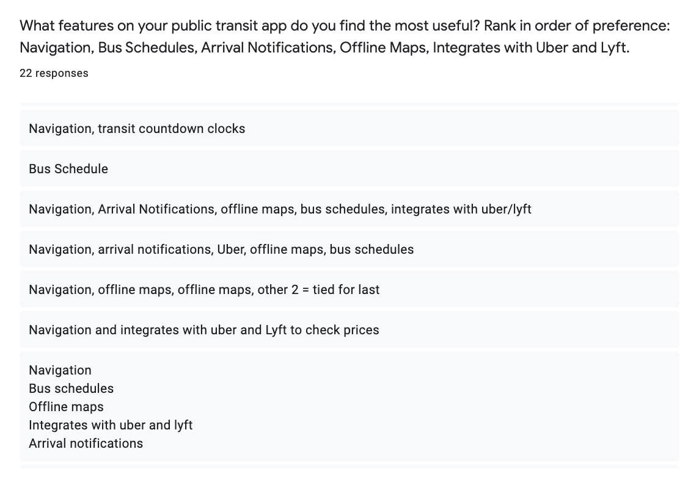
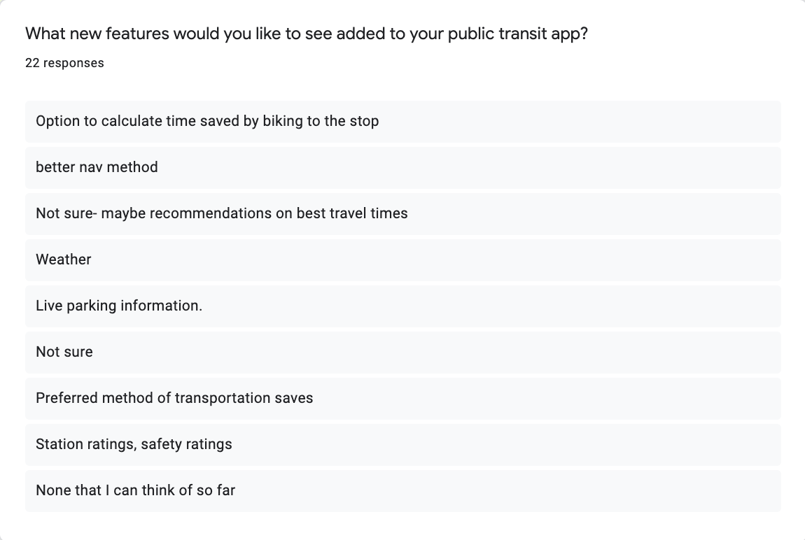
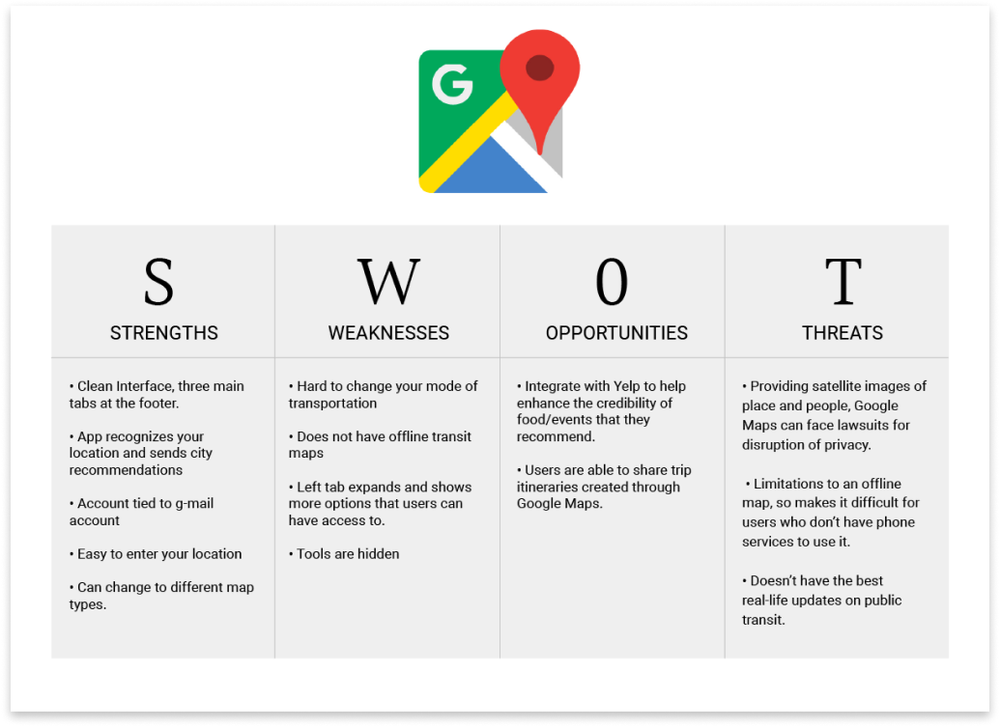
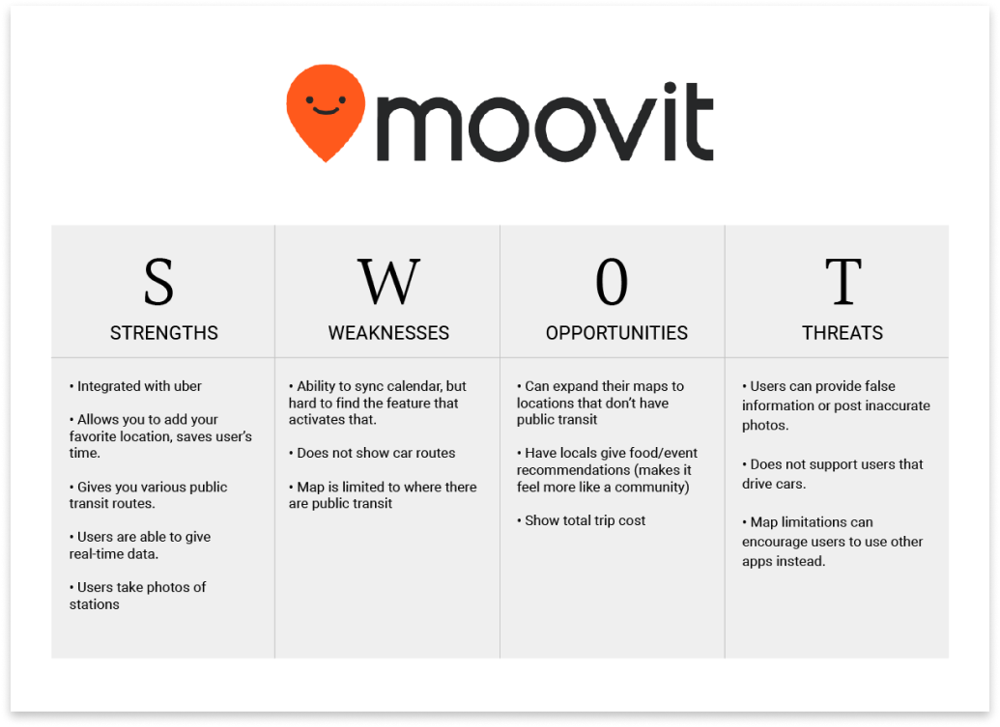
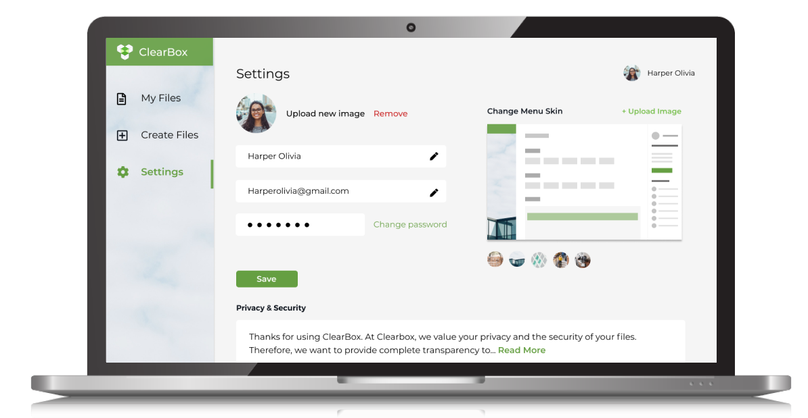
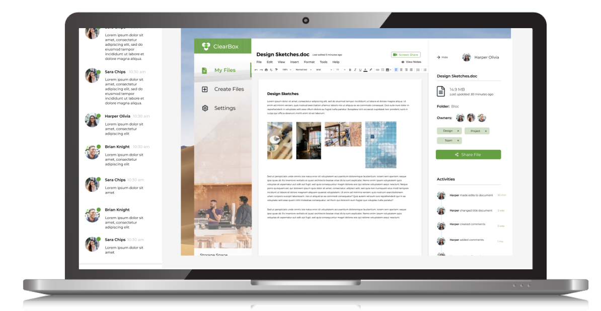
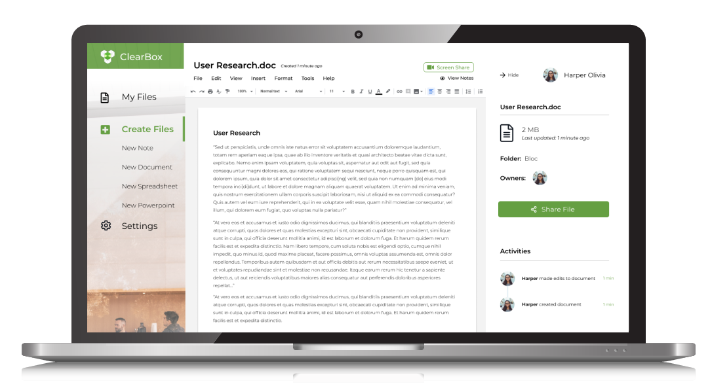

With more and more locals taking public transportation, the local transit system has decided to expand the number of bus lines at each stop. However, with the added lines, riders were now unsure of when their bus would arrive. BusyBus was created to let riders know where their bus was at and when it would arrive.
Role & Duration
UX Designer
Research, Information Architecture, Interaction, Visual design & testing
Jun 2019 - Jul 2019
Problem
Transit officials have identified a problem. Due to expansion, numerous bus routes have been added and many of those routes stop at the same bus stop. Riders want to know what the next arriving bus is and how much time they have to get to a bus stop.
The specific stop that I was solving for was the bus stop on Washington and State, which currently has seven bus lines running there.
Solution
Visual Map: the map signifies to users where they currently are, and will notify them of their surrounding bus stops.
Live Traffic Updates: once a user places their location in, a route will be drawn from the user to the bus that they are tracking. Users will be given notifications on bus activity.
Bus Schedule: when a user places a location for a bus stop, BusyBus will show all buses that run through that stop. This way users are able to identify when their bus will arrive at the intended stop.
Discovery Phase
As a local from Los Angeles, I was not familiar with how public transportation worked. In order to have a better understanding of the problem, I conducted a survey. My primary audience are users that use public transit or are familar with using a public transit app. The results from my survey helped me understand the user’s wants and needs from a public transit app. From the results, I found out that about 50% of participants used public transportation twice a week and 23% used it five plus days. The reasons to why public transit was used because it was their way to commute to work, it was affordable, and it was more convenient than driving.
In the survey, I asked about struggles that users had with their public transit apps. These were the struggles that I would be placing my focus on. 27% of users said that navigation was oftentimes not accurate. 18% of buses were usually never on time, and a lot of features in their transit apps were buried within tabs.
I then looked into asking questions that focused on features in the app. I had survey participants rank in order of preference the following features: Navigation, Bus Schedules, Arrival Notifications, Offline Maps, and Integrates with Uber and Lyft. 55% of participants placed navigation as most important, that was followed by 32% of participants that said bus schedule. Participants suggested that they wanted to see live traffic information on their transit app, bus/arrival notifications of buses.



Competitive Analysis
Having familiarized myself with the behaviors of users with mobile transit apps. I did research on competitors within the marketspace. From the survey, the two competitors most used from my participants were Google Maps and Moovit. There were some common similarities that I noticed in researching the two. Both apps home page showed a defaut of a user’s location. There is a lot of information and features with both apps that usually information is buried and hard to find. Lastly, navigation is bias towards a specific source of transportation. Google Maps, for example, is focused on car navigation, whereas, Moovit only supports navigation with users using buses.
For BusyBus to enter into the marketspace, I needed to create a feature that sends instant notification updates to their uesrs on public transit schedules. BusyBus also needs to send user daily real time updates on when their bus/trains are arriving. Since the primarily mode of transportation for BusyBus would be local transportation, it would be neat to see BusyBus include inside maps of metro stations. With users catching their trains, they are already stressed on having to arrive at the train station at the right time. For users to have to also navigate their way around metro stations without a map can cause even more stress. I believe this added visual feature can definitely help BusyBus stand out within their competitors.


Information Architecture Phase
Having gained a better understanding of my users and marketspace. It was time to create user stories and user flows. In my sketch, I wanted to incorporate the results from my survey and market research to create user stories.
By understanding my user flows, I started sketching out how the screens would look like. For each user flow, I did three to four different sketch iterations. This helped me find the best possible design layout. I used Figma to digitally design these sketches into wireframes.
High-Fidelity Wireframes
Building my high-fidelity wireframes prepared me to begin prototyping and testing. The purpose for testing was to see if users would be able to navigate within the product with close to no direction on my end.
The first steps in branding was identifying my target audience, which in this case were remote professionals. Having worked as a freelancer for five years now, I understood that one of the key struggles I had was not feeling part of a whole. Oftentimes, details and direction on a project can get lost in translation. All I wanted was more clarity and transparency. I liked the word “Clear” used in the product, for it could be interpreted in many ways. For some, it can mean having full transparency, which can eliminate points of cloudiness. I went with the name ClearBox because it represented the idea of creating your own personal workspace and being able to feel part of a whole.
Logo Design
From the word clear, I was able to branch out to other words that I believed would help identify the brand. Some of these words included being transparent, reliable, adaptable, useful, motivational, etc. I used words created from my mind mapping execise to start sketching logo ideas out. I wanted a logo that showed transparency and layers. The logo needed to reflect the name of ClearBox as well as incorporates elements of a workspace in a minimalistic way. The logo would come off as professional, and so most of the shapes used in the logo were geometric.
Color Palette
The next step was establishing the mood board which would come to aid my decision for the color palette. This was personally my favorite part of branding. I searched for images that I thought best represented our product, yet still tied in with the words from the mind map. I drew inspiration from offices that had a lot of natural light, organic natural woods, and plants. I liked the mix of greenery and organic textures amongst industrial spaces. I used the eye picker to select certain colors that popped out to me. The main accent color used is green. I wanted to stray away from blue because it is often a color used in software products. I wanted to make the product visually unique, and at the same time have it serve as a design challenge for myself.
User Testing Phase
The idea behind the first draft of the high fidelity mock-up was to incorporate stock photo images of work spaces and young working professionals. As stated above in the branding, I used green as an accent color. I also incorporated some warmer/neutral tones to help balance out the whitespace on the screens. As I added this style throughout the rest of the product, I wanted to do a quick preference testing to see how users felt on some particular screens that I had some design curiosity in. I tested out different color variation, layout, and button placement. Below are three screens that I tested, which 2 designs each:
Preference Testing
What color do you prefer? 83% of users chose the second design.
Where do you prefer button placement? 84% of users chose the first design.
What layout do you prefer? 67% of users chose the first design.
Based on the preference testing, an overwhelming amount of users were more into the dark blue menu for the dashboard. This would be a major change in my second draft of high-fidelity mockups. I was also able to execute the screens users chose in the other preference tests, so made those adjustments as well.
User Testing Part 2
I decided to do a second round of testing in order to add the changes done from my preference testing. The results of this testing drastically changed the look of my design. A number of users had complained that the “My Files” tab and “Collaboration” tab were too similar in look and functionality to one another. The only difference the screen had was the ability to view notes and screen share for collaborative projects. Originally in my mind, I thought collaboration should be a separate tab in itself, because it was a highly sought out feature from my user surveys. However, the way I designed it out didn’t make it too different from “My Files”. Therefore, I decided to combine the “Collaborate” tab into the “My Files” tab. All files that are shared will be allowed the feature to share notes and screen share. The other comment that was made was that settings was difficult to find. Users didn’t seem to notice that the profile image would have a drop down to access settings. Since I had some extra real estate on my left menu bar, I decided to add a tab that featured “Settings”. This way users had two ways in accessing “Settings”. Lastly, one user had commented in adding a breadcrumb trail just to help users track their steps in the product. The breadcrumbs would allow easy shortcuts for users to jump to different screens.
One comment that caught me by surprise was when a user couldn’t see how the branding was shown in the product itself. She said the landing page of the website didn’t quite match the same feeling in the product and that she wanted to see more transparent effects that would match the style of the logo. When this was brought to my attention, I realized that I had left out a crucial part of my branding out. I originally named the product ClearBox because it was a platform in which users could feel less alone. They would be able to customize the look and feel of their workspace to match whichever setting they were in. In my final iteration of my design, I seeked to make the product more personable by allowing users to change their background skin on the settings page.

Customize Your Workspace
Since remote professionals aren’t tied to any space, the ability to customize their workspace allows users to change their settings where ever they are at.

Project Collaboration
Team sharing made easy. With two clicks, users can easily add in new team members to projects. Users are also allowed to view activities of actions done to shared projects.

Document Creation
Need to create documents to share? In ClearBox, users have the options to create different types of documents. All documents created in ClearBox will have offline editing abilities and automatic saving features.
I believe that I identified a great target audience for the product. I was able to look at the transition of jobs becoming more and more remote. I used my observations as an advantage to finding my audience.
In considering future developments of the current product, I want to send out surveys targeting remote work professionals. From the surveys, I’m hoping to create more features that are gauged towards my specific audience. I liked how I used my personal experiences as a freelancer to help my drive ClearBox’s branding. In the next steps of design, I’d like to place my focus in having the product be more malleable to the user.
I believe these goals listed above can be achieved through user research, ideation, prototyping, wireframing and usability testings.